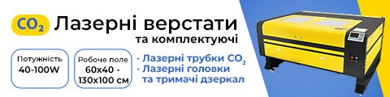
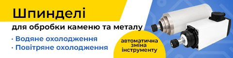
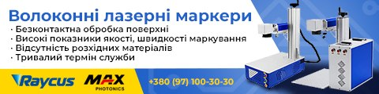
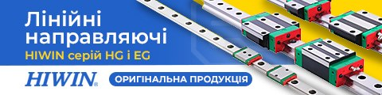
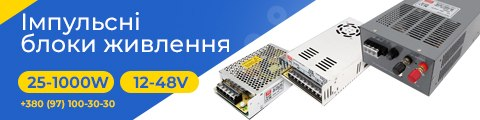
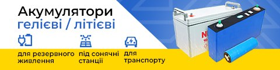
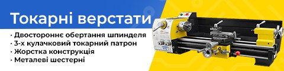
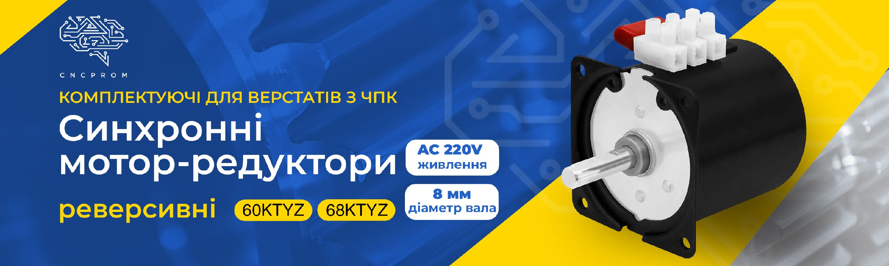
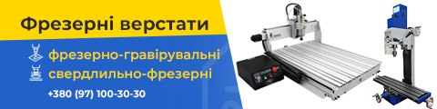
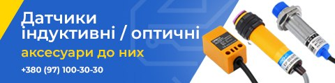

Перевірка рекламних банерів
Текст і фото банерів звірено з каталогом cncprom.ua (скрапінг 19–20.10.2026): назви, характеристики, описи. Наявність не враховується. Згори банери, які треба виправити. Праворуч фото відповідних товарів із сайту, клік відкриває товар.
| № | Банер | Що не так | Що так | Фото на сайті |
|---|---|---|---|---|
| 1 |  CO₂ лазерні верстати Треба виправити |
| Трубки CO₂, головки й тримачі дзеркал є. Фото: LM9060 / LM6040. |  10-015 10-015 10-045 10-045 10-047 10-047 10-019 10-019 |
| 2 |  Шпинделі для каменю та металу Треба виправити |
| Усі чотири групи є на сайті окремими розділами. |  13-039 13-039 13-006 13-006 13-012 13-012 13-026 13-026 |
| 3 |  Волоконні лазерні маркери Є зауваження |
| Raycus і Maxphotonics є, решта переваг є в описах. Фото: як FM-…-D (10-512). |  10-51210-507 10-51210-507 10-503 10-503 |
| 4 |  Лінійні напрямні HIWIN HG і EG Є зауваження |
| Серії HG (32) і EG (10) є. Фото: каретки HGW / EGW. |  60-007 60-007 60-009 60-009 60-305 60-305 60-303 60-303 |
| 5 |  Імпульсні блоки живлення Є зауваження |
| Серії S, MDR, DR, SCN є. Фото: S-25, S-400, SCN. |  02-001 02-001 02-015 02-015 02-020 02-020 02-019 02-019 |
| 6 |  Акумулятори гелеві / літієві Є зауваження |
| Гелеві NPP і літієві є, застосування є в описах. Фото: NPP (90-008), Eve (91-027), EVE 33140 (91-001). |  90-008 90-008 91-027 91-027 91-001 91-001 |
| 7 |  Токарні верстати Є зауваження |
| Чотири пункти — з описів. Фото: JY280F (10-405), для нього все правда. |  10-405 10-405 10-403 10-403 10-404 10-404 |
| 8 |  Синхронні мотор-редуктори Є зауваження |
| 60KTYZ і 68KTYZ: реверсивні, 220 В, вал 8 мм. Фото збігається. |  12-70512-718 12-70512-718 12-731 12-731 |
| 9 |  Фрезерні верстати Збігається |
| Обидва типи є. Фото: 6040 (10-005), WMD25V (10-407). |  10-005 10-005 10-017 10-017 10-409 10-409 10-407 10-407 |
| 10 |  Датчики індуктивні / оптичні Збігається | немає | Індуктивні, оптичні й кронштейни є. Фото: TL-Q5M, E3F-DS30, LJ12A3. |  03-222 03-222 03-205 03-205 03-012 03-012 |